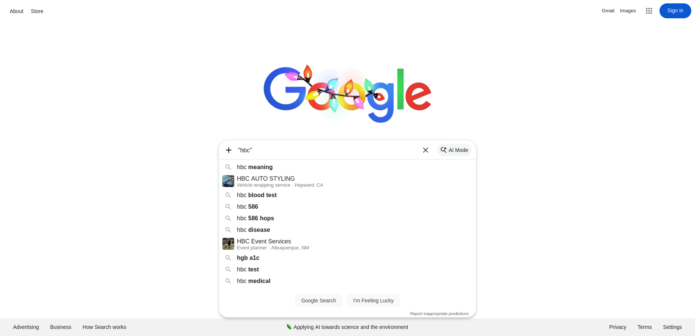
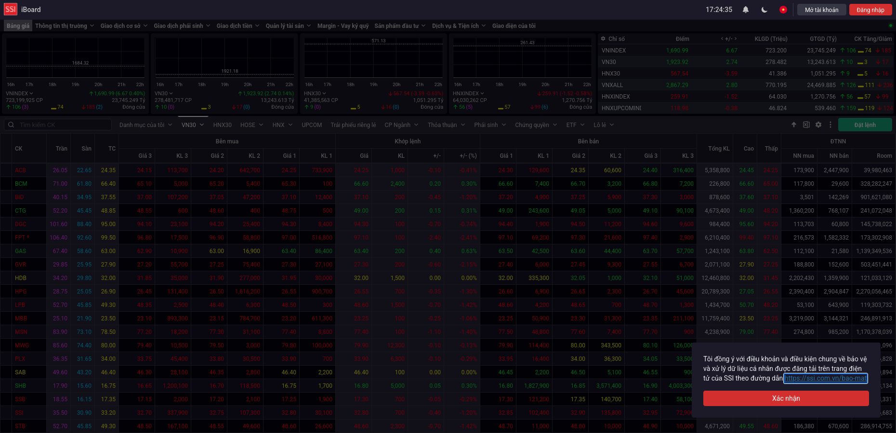

-
First feature but this is powerd by playwright and javascript
7:18:24 AM / 00:00:00:049 Fail
First feature but this is powerd by playwright and javascript
12.16.2025 7:18:24 AM 12.16.2025 7:18:24 AM 00:00:00:049 · #test-id=1Go home then search hbcAutomationBot @hbc @first Chrome120/Windows11Status Timestamp Details Pass 7:18:24 AM Init Browser (2142 ms) Pass 7:18:24 AM I navigate to the front page (25259 ms) Pass 7:18:24 AM I enter "hbc" (97 ms) Pass 7:18:24 AM I should see "hbc" is suggested (15004 ms) Pass 7:18:24 AM I should see data (2141 ms) Pass 7:18:24 AM Cleanup (628 ms) Open the html log of the above scenario then check aroundAutomationBot @hbc_log @first Chrome120/Windows11Status Timestamp Details Pass 7:18:24 AM Init Browser (1379 ms) Skip 7:18:24 AM I open the html log at a predefined location Skip 7:18:24 AM I am sure that the created date is new Skip 7:18:24 AM I will check the details result Skip 7:18:24 AM the count should be correct Pass 7:18:24 AM Cleanup (625 ms) Sample test to return failure the point is to get a failed log so we can have various values reflectedAutomationBot @fail @first Chrome120/Windows11Status Timestamp Details Pass 7:18:24 AM Init Browser (1320 ms) Pass 7:18:24 AM I open google (1383 ms) Pass 7:18:24 AM I search "hbc" (57 ms) Fail 7:18:24 AM I click bad stuff to see failure (10062 ms) Fail 7:18:24 AM locator.waitFor: Timeout 10000ms exceeded.
Call log:
- waiting for locator('//xyz') to be visible
at Object.clickElement (/home/runner/work/repo1/repo1/playwright/tests/support/utils.js:67:19)
at World.(/home/runner/work/repo1/repo1/playwright/tests/steps/first.steps.js:79:14) Pass 7:18:24 AM Cleanup (614 ms) 
Cleanup screenshot -
Check data consistency among various service providers
7:18:24 AM / 00:00:00:013 Pass
Check data consistency among various service providers
12.16.2025 7:18:24 AM 12.16.2025 7:18:24 AM 00:00:00:013 · #test-id=5Go fireant check total volume then go ssi verify the same item but using apiAutomationBot @second @api Chrome120/Windows11Status Timestamp Details Pass 7:18:24 AM Init Browser (1303 ms) Pass 7:18:24 AM I navigate to the front page (7247 ms) Pass 7:18:24 AM I enter "IJC" (401 ms) Pass 7:18:24 AM I should see "IJC" is suggested (15003 ms) Pass 7:18:24 AM I go see details of total volume "IJC" (143 ms) Pass 7:18:24 AM I see to total volume (813 ms) Info 7:18:24 AM Embedded I see to total volume text: INFO: Total volume: 2847200
Pass 7:18:24 AM I go ssi place (7152 ms) Pass 7:18:24 AM I check total volume "IJC" (462 ms) Pass 7:18:24 AM Total volume should match (equal or greater since there will be possibly new match) (451 ms) Info 7:18:24 AM Embedded Total volume should match (equal or greater since there will be possibly new match) text: INFO: Total volume: 2847200
Pass 7:18:24 AM Cleanup (720 ms) 
Total volume should match (equal or greater since there will be possibly new match) screenshot
-
@first
3 tests
@first
1 passed 1 failed 1 skippedStatus Timestamp TestName Pass 07:18:24 AM Go home then search hbc First feature but this is powerd by playwright and javascript.Go home then search hbcSkip 07:18:24 AM Open the html log of the above scenario then check around First feature but this is powerd by playwright and javascript.Open the html log of the above scenario then check aroundFail 07:18:24 AM Sample test to return failure the point is to get a failed log so we can have various values reflected First feature but this is powerd by playwright and javascript.Sample test to return failure the point is to get a failed log so we can have various values reflected -
@hbc
1 tests
@hbc
1 passedStatus Timestamp TestName Pass 07:18:24 AM Go home then search hbc First feature but this is powerd by playwright and javascript.Go home then search hbc -
@api
1 tests
@api
1 passedStatus Timestamp TestName Pass 07:18:24 AM Go fireant check total volume then go ssi verify the same item but using api Check data consistency among various service providers.Go fireant check total volume then go ssi verify the same item but using api -
@hbc_log
1 tests
@hbc_log
1 skippedStatus Timestamp TestName Skip 07:18:24 AM Open the html log of the above scenario then check around First feature but this is powerd by playwright and javascript.Open the html log of the above scenario then check around -
@fail
1 tests
@fail
1 failedStatus Timestamp TestName Fail 07:18:24 AM Sample test to return failure the point is to get a failed log so we can have various values reflected First feature but this is powerd by playwright and javascript.Sample test to return failure the point is to get a failed log so we can have various values reflected -
@second
1 tests
@second
1 passedStatus Timestamp TestName Pass 07:18:24 AM Go fireant check total volume then go ssi verify the same item but using api Check data consistency among various service providers.Go fireant check total volume then go ssi verify the same item but using api
-
Chrome120/Windows11
4 tests
Chrome120/Windows11
2 passed 1 failed 1 skippedStatus Timestamp TestName Pass 07:18:24 AM Go home then search hbc First feature but this is powerd by playwright and javascript.Go home then search hbcSkip 07:18:24 AM Open the html log of the above scenario then check around First feature but this is powerd by playwright and javascript.Open the html log of the above scenario then check aroundFail 07:18:24 AM Sample test to return failure the point is to get a failed log so we can have various values reflected First feature but this is powerd by playwright and javascript.Sample test to return failure the point is to get a failed log so we can have various values reflectedPass 07:18:24 AM Go fireant check total volume then go ssi verify the same item but using api Check data consistency among various service providers.Go fireant check total volume then go ssi verify the same item but using api
Started
Dec 16, 2025 07:18:23 AM
Ended
Dec 16, 2025 07:18:24 AM
Tests Passed
1
Tests Failed
1
Tests
Steps
Log events
Timeline
Tags
| Name | Passed | Failed | Skipped | Others | Passed % |
|---|---|---|---|---|---|
| @first | 1 | 1 | 1 | 0 | 33.333% |
| @hbc | 1 | 0 | 0 | 0 | 100% |
| @api | 1 | 0 | 0 | 0 | 100% |
| @hbc_log | 0 | 0 | 1 | 0 | 0% |
| @fail | 0 | 1 | 0 | 0 | 0% |
| @second | 1 | 0 | 0 | 0 | 100% |
Device
| Name | Passed | Failed | Skipped | Others | Passed % |
|---|---|---|---|---|---|
| Chrome120/Windows11 | 2 | 1 | 1 | 0 | 50% |
System/Environment
| Name | Value |
|---|---|
| OS | Linux |
| Java Version | 17.0.17 |
| User | runner |
| Build | 1.0-SNAPSHOT |
| Git Commit | |
| CI Job |